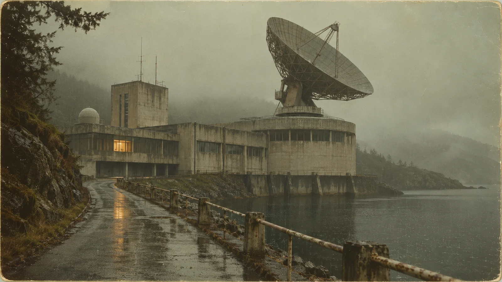

PROJECT TRACE
An index of recurring observations
TRACE expands to Temporal Records and Archive Correlation Experiment. Its public catalogue contains eight report entries. A conservator’s annotation refers to a ninth.
Read the project cataloguePUBLIC CATALOGUE / CONSERVATION EDITION
The foundation’s TRACE collection studies the language and chronology of political crises, scientific institutions, and public reporting.

Aster observatory / fictional generated photograph, not a real historic facility.
PROJECT TRACE
TRACE expands to Temporal Records and Archive Correlation Experiment. Its public catalogue contains eight report entries. A conservator’s annotation refers to a ninth.
Read the project catalogueEDITORIAL PRACTICE
The programme office grouped records under their earliest associated milestones. Conservators requested that original receipt chronology be retained separately.
Programme director: Elias Rook / former conservator: Mara Voss. These are fictional people.
THREE COLLECTIONS / IN-WORLD EXHIBIT LABELS
Evacuation notices, a reconstructed dispatch chain, and a two-part editorial memorandum. The collection concerns public accounts and their chronology.
RECONSTRUCTED RECORDS / ASTER INTERNAL MATERIALAster’s exhibit groups the Atoms for Peace address and the establishment of the IAEA under 1953. A source-check request disputes that combined label.
DISPUTED ASTER LABEL / COMPARE THE REAL SOURCEAster’s label uses 1972 for the Biological Weapons Convention’s entry into force. The signature date and the entry-into-force date may describe different events.
DISPUTED ASTER LABEL / COMPARE THE REAL SOURCEThe documents above belong to a fictional archive. Actual historical reference dates can be checked in these primary sources.
A date label is also a claim. The conservation copy retains the original labels so readers can examine the differences.